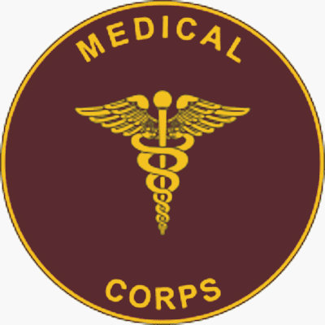
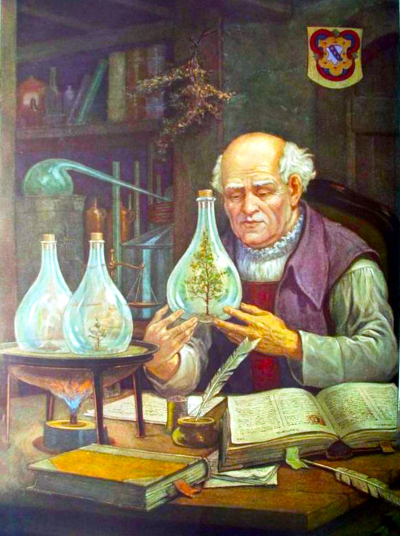
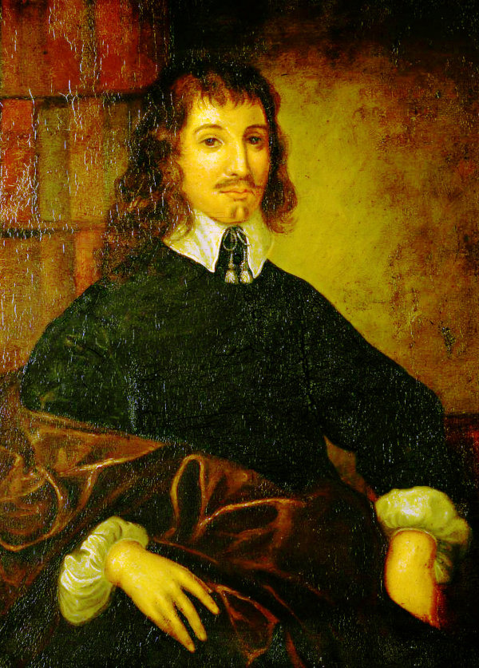
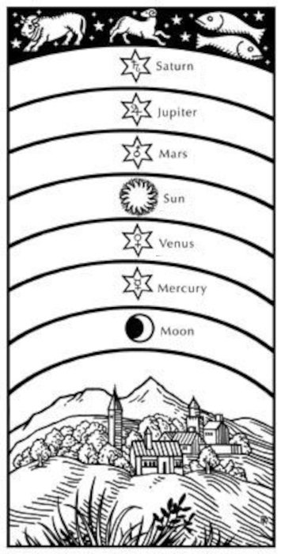

Astrology, Medicine and Hermetism
Ever since ancient times, astrology has been applied to many fields of human endeavour and most significantly, medicine. In the modern world these endeavours have been reduced (rationalised) to scientific disciplines, such that magic has been turned into physics, alchemy into chemistry and the ancient medicine into diagnostics, surgery, medical theory and applied pharmacy. Here we shall touch upon what these originally were at their fullest and most elaborate extent.To make things a little clearer, the term magic is often used here, meaning the intentional manipulation of the physical world by employing supernatural agencies or forces. How this differs from alchemy is that magic, more often than not, goes beyond the boundaries of just physical matter, with the intention of also altering the course of events. Within the framework of medicine, alchemy usually produces medicines to be administered to the patient, whereas magic intends to alter the patient or sickness by supernatural intervention, using particular spells, amulets, incantations and so on.
What is Astrological Medicine ?
Astrological Medicine in Hermetism, encompasses a number of fields of human endeavour, including iatromathematika, melonesia, spagyric, rhizomatoi and (occult) botany especially in the form of herbalism. These fields of study have since been pushed into the realms of esoterics, occultism or superstition, mainly because their effects are regarded by self-styled authorities, erroneously, as 'beliefs' which don't belong to any recognised religion. Giulio Campagnola, The Astrologer (l'astrologo), 1590
Giulio Campagnola, The Astrologer (l'astrologo), 1590Campagnola (1482-1515) was an engraver who invented stippling to create elaborate shading in his works.
These concepts stem from ancient Gnosticism (literally meaning 'knowing'), which although is not a religion, has always threatened Christianity, at its core, as being its suppressed source of religious ideas. The central theme of Gnosticism is that the world and everything in it is purely evil and it is the duty of an enlightened person to break free from physical existence and ascend to the heavenly realm. Sickness, in this framework, is held to be caused by possession from evil demons, notably of a planetary nature. Nowadays, those demons have been given medical names.
 Jacob's Ladder by William Blake portrays the steps to heaven
Jacob's Ladder by William Blake portrays the steps to heaven
This idea is very different from that of Hermetic Philosophy which regards the Creation as Divine and Good (an idea which was also absorbed into Christianity). Rather than blindly accepting one's lot, Hermetism concentrates on improving personal experiences in the current and real world by elevating spirituality towards the Divine in this life and not the next. Unfortunately, this idea was shunned by Christianity in favour of encompassing the Gnostic salvation after death.
Unluckily for Hermetism, it was hijacked early in its career by Gnostic scribes, well before the Common Era (that is, BC or BCE), who modified the Hermetic texts to align with their own version of Gnostic ideas. The result was that some later texts, now claimed to be Hermetic, describe an aim of ascending to heaven through the 'planetary spheres'. This was added to both Gnosticism and Hermetism by embracing kabbalistic concepts for an already existing audience.
The following quote about the Hermetic Logos and Nous, from Andre-Jean Festugiere (15.03.1898-13.08.1982), a French Christian friar, historian and philologist, who also translated the Corpus Hermeticum, is an example of how Hermetism can be confused with Gnosticism :
For even in man (the highest of the animals), the rational soul [personal logos} is still bound up with the body and dependent on matter. All the processes of the reason [logos] help one not one whit to make the ascent towards God. "Those who failed to hear the Divine Proclamation," says one of the Hermetic writers, "are those who possess the logos only, but have not received also the nous" that is, the faculty of mystical intuition; . . . "these men know not for what purpose they have been made, and by whom they have been made". The entire spiritual quest therefore will consist in gathering together one's faculties within oneself, in ridding oneself of all images and all thoughts, in living in a state of pure passivity in
which one hopes, in the end, to find God.
("Personal Religion Among The Greeks", p132)
And Elaine Pagels commented on the problem of "gnosis" or "knowing":
[Valentinus] believed, one could progress beyond faith to understanding, that is, to gnosis. This word is often translated into "knowledge", but the translation is somewhat misleading, since gnosis differs from intellectual knowledge (as in phrases like "they know mathematics"), which is characterized in Greek by the word eidein (from which we derive the English word idea).
English is unusual within its language group in having only one verb ("to know") to express different kinds of knowing. Modern European languages use one word to characterize intellectual knowledge and another for the knowledge of personal relationships: French, for example, distinguishes between savoir and connaître, Spanish between saber and conocer, Italian between sapere and conoscere, German between wissen and kennen. The Greek word gignosko, from which gnosis derives, refers to the knowledge of personal relationships (as in "We know Christ" or, in the words of the Delphic oracle, "Know thyself"). The term might better be translated as "insight", or "wisdom".
One Gnostic teacher [Hippolytus in "Refutation of All Heresies"] encourages his students to seek gnosis within themselves:
(from Elaine Pagels, "The Origin of Satan", 1995)
English is unusual within its language group in having only one verb ("to know") to express different kinds of knowing. Modern European languages use one word to characterize intellectual knowledge and another for the knowledge of personal relationships: French, for example, distinguishes between savoir and connaître, Spanish between saber and conocer, Italian between sapere and conoscere, German between wissen and kennen. The Greek word gignosko, from which gnosis derives, refers to the knowledge of personal relationships (as in "We know Christ" or, in the words of the Delphic oracle, "Know thyself"). The term might better be translated as "insight", or "wisdom".
One Gnostic teacher [Hippolytus in "Refutation of All Heresies"] encourages his students to seek gnosis within themselves:
"Abandon the search for God, and creation, and similar things of that kind. Instead, take yourself as the starting place. Ask who it is within you who makes everything his own saying,
“my mind,” “my heart,” “my God.” Learn the sources of love, joy, hate, and desire. . . . If you carefully examine all these things, you will find [God] in yourself".
The Cadeceus,
the winged staff
of Hermes
the winged staff
of Hermes
Rod of Asclepius
symbolising medicine
symbolising medicine

b Mercury
A Roman coin from the year 74 CE depicting a Cadeceus which resembles the sigil for MercuryThe Rod of Asclepius and The Cadeceus
To talk about Hermetic medicine would not be complete without a mention of the Egyptian, Greek and Roman gods. Although similar, there were two gods of medicine, Asclepius and Hermes who carried with them magic wands entwined by snakes, but having different myths and legends surrounding them.Asclepius, the ancient Greek god of healing and medicine, was depicted as holding a staff or rod, which itself came to symbolise healing. Asclepius is also the name of one of the Philosophical Hermetic treatises, as well as being the name of a prominent character in Hermetic dialogues. To make things even more complicated, Hermes Trismegistus is often attributed with being the inventor of Hermetic Medicine.

In 1902, the U.S. miltary mistakenly assumed that the Cadeceus with two snakes was the symbol of medicine, while it should have been the Rod of Asclepius with only one snake
He in turn, or as the Greek god Hermes or the Roman god Mercury, was depicted as carrying a similar item to that of the Rod of Asclepius, called the Cadaceus.
The Cadeceus was the original symbol for Mercury and the modern astrological sigil is based upon it. According to legend, the Cadeceus, had magical powers. "The wand of Mercury was endowed with such virtues that whoever it touched, if asleep, would start up into life and alacrity, and, if awake, would immediately fall into a profound sleep. When it touched the dying, their souls gently parted from their mortal frame ; and, when it was applied to the dead, the dead returned to life." (William Godwin, "Lives of the Necromancers" 1876, p37).
Elements and the Matter of the Human Body
According to Hermetic philosophy, everything is made up of the four elements, fire, air, water and earth.Modern science has "found" that:
The human body is mostly oxygen, hydrogen, nitrogen and carbon,
whereby these total 96% by mass and 99% by number of atoms.
If this is correlated to the four traditional elements:
| traditional element |
chemical element |
by mass in human body |
by atoms in human body |
amount in atmosphere |
| fire | nitrogen | 3% | 1% | 78% |
| air | oxygen | 65% | 24% | 21% |
| water | hydrogen | 10% | 62% | |
| earth | carbon | 18% | 12% | |
| = 96% | = 99% | = 99% |
understanding of the elemental composition of the human body, the microcosm.
Magical Hermetic Healing with Azoth, Alkahest or the Philosopher's Stone
Many paths of medicine, especially in the middle ages were influenced by Arabic magic and alchemy. As such, the sideline of Alchemical cures were intermingled with miracles and magic. The ultimate aim was often to create a panacea, a cure-all substance which could be used as a pathway to health or immortality. These substances were more often than not, referred to in Alchemy as Universal Solvents. The recipes for preparing these were, naturally enough, top-secret. Azoth
Azoth from Basil Valentine
The Philosopher's Stone is undoubtedly the most famous of the magical substances. It has become the stuff of legends and myths, such as the immortality of the alchemist, Nicholas Flamel, which has since been proven to be untrue. The stone is regarded as having the power to transform lead into gold or mercury into silver, act as a universal elixir bringing about rejuvination or eternal life. Its creation is the most treasured aim of the alchemist.
Azoth
The word azoth can be traced back to the medieval Latin word azoc from the Arabic al-za'buq (الزئبق), meaning 'the mercury.' Azoth was mentioned in many ancient alchemical texts as the animating spirit in all matter. Once extracted, it could be used to gain access to the essence of other substances. Within the context of magic throughout the Renaissance, it was related to spiritual enlightenment, purification of the soul and elevated states of consciousness. This in turn influenced Hermetic and esoteric schools of thought. There is a great likelihood that Paracelsus modelled his Mercury of the Tria prima on azoth.
Alkahest
Alkahest, a word of uncertain origin, is another of the alchemical recipes for a panacea. Paracelsus had his own recipe for alkahest consisting of alcohol, caustic lime, and carbonate of potash, although the result of the recipe was not intended to be a "universal solvent". Instead he claimed it helped with liver failure by being a substitute for its functions.
Some Fields of Hermetic Medicine Involving Astrology
 Root Gatherer
(Rhizomatoi)
Root Gatherer
(Rhizomatoi)
Rhizomatoi, Herbaria, Taberna and Unguentaria
The medicinal nature of plants has been known since ancient times. The addition of astrological observations and symbolism into the timing of collection, preparation and administering of herbs and herbal medicines is part of the technical Hermetica, namely Hermetical Astrological Medicine.In ancient times medicines were prepared from plant, mineral and animal sources, yet by far the majority were from plants, having been known since the time of Hippocrates (c.460–c.370 BC). Those used for internal use consisted of the most common remedies such as powders, pills, decoctions, infusions, herbal teas, compound wines, vegetable juices and medicated oils, while those for external use were represented by ointments (unguents), salves (pomades), balms (balsams), waxes and lotions.
The raw materials for these preparations were usually fetched by professionals, in the field, so to speak. Necessarily, these experts needed to know their way around plants and be able to identify those which were sought after as well as knowing which was the best time to pick them according to the most favourable condition. More often than not this was determined astrologically, for instance by the position or phase of the moon. This practice is still maintained, by some, today.
 Taberna herbaria (Herb Tavern)
Taberna herbaria (Herb Tavern)
The Rhizomatoi were specialist "root-gatherers" who were the fore-runners of today's herbalists but with a magical twist. They collected all sorts of plant parts which were regarded as healing substances with the ultimate aim of selling them themselves or supplying apothecaries who could prepare them as drugs to dispense them for later administration. There was a huge resurgence of this art in Italy in the middle ages.
Since the majority of raw materials for the making of medicines came from plants, the term "Plantae Officinalis" was employed to state which particular plants were for medicinal use. The term "Officinalis" in this sense originally referred to the medical plant store of a monastery and was later used as an adjunct to the name of a plant to denote that it was a medicine or food. The term was adopted by Carl Linnaeus (23.05.1707–10.01.1778), for his "Latin Names" (binomial nomenclature) to refer to medical or culinary plants as opposed to "Vulgarus", meaning "common", especially for plants ocurring in the wild.
Further along the line, such was the spread of medications in the ancient Roman world, Unguent Taverns (Unguentaria Tabernae) were set up to specialise in the preparation of ointments. The preparatory pharmacists were called Ointment Dispensaries (Unguentarii). As well as that, there were Herbal Taverns (Taberna herbaria) for the sale of medicines, compresses, poultices, decoctions and herbal teas. These all served as part of the folk medicine, which set itself apart from the doctors.
Eventually, these places were all controlled by laws in order to protect the new scientific approach to medicines. The Taberna changed into an apothecary (modern "Apotheke" in German). The herbalist turned into a pharmacist. The root-gatherer became the druggist (the word drug coming from the Middle Low German word droge "trocken", referring to dried roots and herbs).
 Zodiacal Melothesia
Zodiacal Melothesia
Melothesia
The word "Melothesia" (Greek: μελοθεσία) stems from the ancient assignment of astrological symbolism to the human body. It was extant in Greco-Roman astral science and based on the doctrine of sympathy between the cosmos as macrocosm, mirroring the human as microcosm. Body parts were assigned to zodiacal signs and the internal organs mostly to planets.| Zodiac Sign | Body Region | Body Parts / Organs |
| Aries | head | eyes, nose, ears, mouth, etc. |
| Taurus | neck | throat |
| Gemini | shoulder, armpits, arms | hands, fingers |
| Cancer | chest area | spleen, lungs, ribs |
| Leo | abdominal area | heart, back, sides |
| Virgo | stomach | intestines |
| Libra | navel, loins, buttocks | kidneys |
| Scorpio | pubic region | uterus, penis |
| Sagittarius | hips, thighs | |
| Capricorn | knees | kneecaps |
| Aquarius | calves, shins | |
| Pisces | feet | toes, soles, heels |
| Planet | Corresponding Body-Parts |
| Moon | sense of taste, stomach, abdomen, uterus, left side of the body |
| Mercury | speech and thought, tongue, gall, buttocks |
| Venus | sense of smell, liver, fleshy parts |
| Sun | sight, brain, heart, tendons, right side of the body |
| Mars | left ear, kidneys, veins, genitals |
| Jupiter | sense of touch, lungs, arteries, semen |
| Saturn | right ear, spleen, bladder, mucus, bones |
An example of a Bat Book which was used in astrological medicine as a lookup table to inform a doctor of the best time to administer medicine.
Iatromathematika, Medical Astrologers
Medical astrologers or Iatromathematika (from Greek ἰατρική , "medical" and μαθηματικά, "mathematics", therefore meaning those who astrologically calculate medical issues), were doctors, physicians or medical practitioners who applied melothesia, the astrological correspondences to the parts of the human body, to investigate disease and discover remedies. Up until the advent of science, this was mainstream state of the art medicine. In English, Iatromathematika has its earliest usage in 1647, with the publication of Christian Astrology by the astrologer William Lilly. This work contains a lot of material about Medical Astrology, especially within the framework of Hermetic Philosophy.The medical astrologer employed a number of techniques starting with setting up charts for the client's time of birth and the time of the start of the sickness, called the decumbiture, usually when the patient first took to bed. The birth chart indicated the propensity for particular disorders, while the chart of the decumbiture encompassed the characteristics of the current ailments as well as possible treatments. Further charts could be implemented to determine transits, directions and progressions to anticipate the course of an illness.
Within the framework of regular allopathic "Galenic/Hippocratic" medicine inherited from ancient Greece and Rome, much attention was paid to the doctrine of the four humours of the human body. The word humour is a translation of Greek word chymos (χυμός", literally meaning 'juice' or 'sap', metaphorically 'flavor'). It is unclear as to whether Hermetic Medical Astrologers were equally enthusiastic about the idea.
 The Four Humours
The Four Humours
The doctrine of the four humours led to a corresponding understanding of the four temperaments, also from Hippocrates, which affected human behaviour and personality. These types supposedly related to the outer appearance of a dominant or excessive humour. These in turn, being entrenched in astrology, were allied to the four elements and the four seasons:
| Humour | Temperament | Element | Qualities | Season |
| Phlegm | Phlegmatic | Water | cold & wet | Winter |
| Blood | Sanguine | Air | hot & wet | Spring |
| Yellow Bile | Choleric | Fire | hot & dry | Summer |
| Black Bile | Melancholic | Earth | cold & dry | Autumn |
It was Paracelsus who said in 1538 that:
"All things are poison, and nothing is without poison; the dosage alone makes it so a thing is not a poison."
(Alle Dinge sind Gift, und nichts ist ohne Gift; allein die Dosis macht, dass ein Ding kein Gift ist.).
In Writing
Paracelsus himself, avoided the word astrology in his numerous writings, perhaps to distance his work from the mainstream astrological medicine. Instead, when he wrote about influences from the heavens, he used the term "Astral" and urged Practitioners to know everything about "Astronomey" for timing of events. This is undestandable as he was more of an alchemist than an astrologer. To historians, this has brought about some misunderstanding regarding Hermetic texts which are only considered to be astrological if a chart was drawn and predictions were made. The Paracelsians, as the followers of Paracelsus, continued to publish his works, including translations into other languages such as Dutch, German, French, Latin and English, as well as penning new works attributed to Paracelsus, likely in the same manner as was done with Hermes Trismegistus.

Paracelsus and his Spagyric
Spagyric
The term Spagyric is taken to be from the Late Latin word, spagyricus from the Ancient Greek verbs, spán (σπᾶν, "to draw" or " to pull") and ageírein (ἀγείρειν, "to assemble"). In our case this means to draw together essential quintessences in a manner that enables the assembly of a medicine. It is often synonymous with alchemic or iatrochemical. Spagyric is in essence the Hermetically alchemical preparation of medicines. It was Paracelsus (c.1493–24.09.1541), who coined the term spagyric and also applied this healing method in practice. Spagyric is firmly entrenched in Hermetism, especially in the way that Paracelsus understood the Hermetic philosophical principles and how he applied them to his technical application.The way that Spagyric works is to reproduce the mechanisms of Universal Generation through the first and second causes. Everything is comprised of matter and spirit and it is the spirit part that is locked up in the matter. Important for Spagyric to work, the spirit part needs to be extracted in such a manner as to ensure that it reaches its maximum virtue. Freeing the spirit from matter requires that it first be exalted, whereby it is matured and ripened, allowing it to evolve through an alchemical process called putrefaction. This acts in a similar manner to a seed breaking down in the ground providing nutrient necessary for germination and new growth.
In Hermetic herbalism or in the mineral kingdom, for this to be successful, it is essential for a practitioner to know the nature of both elemental and astral influences. It is also necessary to know what these influences produce and equally understand what causes could modify those influences. All of this happens within the framework of interaction between macrocosm and microcosm, so that also plays a large part in the overall process. Out of the process of the putrefaction of matter, the spirit is allowed to be purified by freeing it from its earthly prison.
The entire physical side of spagyric is concerned with this separation, or extraction, of the spirit, in order to produce intended quintessences. Since spagyric preparations are in accordance with the mechanisms of Universal Generation, the quintessences produced are readily assimilable by the human organism, thereby being more effective than allopathic medicines. The process is altogether simple, grand and subtle. It is simple in that it follows natural processes, grand as it represents the process of creation and subtle because it defies human comprehension.
Some Prominent Practitioners
Hermes Trismegistus as depicted on the marble floor of the Siena Cathedral.
Hermes Trismegistus
Most importantly for our story is undoubtedly Hermes Trismegistus, an amalgam of the Egyptian God Thoth, and the Greek God Hermes known in Ancient Greek as "Hermē̂s ho Trismégistos" (Greek: Ἑρμῆς ὁ Τρισμέγιστος), "Hermes, the Thrice Greatest". According to legend, he was the inventor of Astrology, Alchemy and Magic and authored many books on those subjects. He was also a significant figure in the Arab Islamic world which had conquered the Alexandrian Empire and acquired all its assets.The oldest recorded mention of Hermes Trismegistus was by the Egyptian Priest, Manetho (lived between c.285 and c.222 BCE) when he wrote to King Ptolomaios II:
Inscriptions from the land of Seir, originating from Thoth, the first Hermes, with hieroglyphs in the sacred language, translated into the Greek language after the flood and recorded in books by the son of Agathodaemon, the second Hermes, the father of Tat, in the shrines of the temple of Egypt.
He is mentioned in Islamic Medical Manuscripts at the National Library of Medicine:
Hermes Trismegistus
الهرميس الهرمس
Hermes Trismegistus was both the Hellenistic Greek name for the ancient Egyptian god Thoth and the name of an authority of late Antiquity on philosophical and magical subjects. In the Islamic world he was known as Hirmīs or Harmas or Harmis or Hurmus. In Arabic treatises he is frequently cited as an authority in alchemy, astrology, and especially magic.
The Library of Congress has an Arabic manuscript purportedly by Hermes Trismegistus:
الهرميس الهرمس
Hermes Trismegistus was both the Hellenistic Greek name for the ancient Egyptian god Thoth and the name of an authority of late Antiquity on philosophical and magical subjects. In the Islamic world he was known as Hirmīs or Harmas or Harmis or Hurmus. In Arabic treatises he is frequently cited as an authority in alchemy, astrology, and especially magic.
The Book of Hermes the Wise
is a text on invocations, magical incantations, and medicinal draughts used for the treatment of maladies. The purported author, Hermes Trismegistus
(Thrice-great Hermes), was a legendary figure in the classical Greek, Roman, and Islamic worlds, to whom a large corpus of writing was attributed.
The book is organized according to the Arabic letters arranged in the abjad system. The discussion for each letter begins with a diagnosis of an adult male who is the companion of the letter, and proceeds to a prescribed therapy involving incantations (occasionally of religious texts such as the throne verse of the Qur'an), as well as botanical preparations and other medicinal compounds.
The text then proceeds to discuss the case of a boy, an adult female, and a girl described in a similarly esoteric fashion as the companion of the letter in question, while prescribing the appropriate therapy for each. The mythology of Hermes Trismegistus took various forms. An early Islamic account is that of Abu Sahl al-Fadl ibn Nawbakht (died circa 815), astrologer to several of the early Abbasid caliphs.
Abu Sahl is quoted by later authors as identifying Hermes as a resident of Babylon, driven away to Egypt at the fall of the Persian Empire to Alexander. Such an account would have served well to place the origin of Hermes' astrology in the territory of the Persian Empire, and thus within the purview of Abu Sahl-an astrologer of Persian heritage working at the caliphal court in Baghdad.
Modern researchers point out the varied nature of the individual works in the vast Hermetic corpus in the Islamic world, written at different times, with different purposes and aims, united only in their claims of authorship in reference to the legendary Hermes. This manuscript, in naskh script and black ink with frequent scribal errors, is dated to 830 AH (1426-27 AD), although the scholar A.Z. Iskander identifies the manuscript as a 20th century copy of an earlier manuscript.
The book is organized according to the Arabic letters arranged in the abjad system. The discussion for each letter begins with a diagnosis of an adult male who is the companion of the letter, and proceeds to a prescribed therapy involving incantations (occasionally of religious texts such as the throne verse of the Qur'an), as well as botanical preparations and other medicinal compounds.
The text then proceeds to discuss the case of a boy, an adult female, and a girl described in a similarly esoteric fashion as the companion of the letter in question, while prescribing the appropriate therapy for each. The mythology of Hermes Trismegistus took various forms. An early Islamic account is that of Abu Sahl al-Fadl ibn Nawbakht (died circa 815), astrologer to several of the early Abbasid caliphs.
Abu Sahl is quoted by later authors as identifying Hermes as a resident of Babylon, driven away to Egypt at the fall of the Persian Empire to Alexander. Such an account would have served well to place the origin of Hermes' astrology in the territory of the Persian Empire, and thus within the purview of Abu Sahl-an astrologer of Persian heritage working at the caliphal court in Baghdad.
Modern researchers point out the varied nature of the individual works in the vast Hermetic corpus in the Islamic world, written at different times, with different purposes and aims, united only in their claims of authorship in reference to the legendary Hermes. This manuscript, in naskh script and black ink with frequent scribal errors, is dated to 830 AH (1426-27 AD), although the scholar A.Z. Iskander identifies the manuscript as a 20th century copy of an earlier manuscript.
Albert Magnus (Albert the Great)
Albertus Magnus
Albert the Great (c.1193-15.11.1280) was a scientist, philosopher, astrologer, theologian, spiritual writer, ecumenist, diplomat and saint. Under the auspices of Humbert of Romans, Albert molded the curriculum of studies for all Dominican students, introduced Aristotle to the classroom and probed the work of Neoplatonists, such as Plotinus.Albertus and his student Thomas Aquinas were resposible for bringing back the teachings of Aristotle into the western world. This effectively ended the Dark Ages from the time of the fall of the Roman Empire. Since that time, it was the Arab world which had inherited the great learning from the ancient world, especially the Greek, having translated and developed it further according to their own understanding. This "new" learning for the west also included advanced versions of alchemy, astrology, medicine, magic, mantic and philosophy, all of which were of great interest to Albertus.
In his treatise, "The Mirror of Astronomy" ("Speculum Astronomiae"), Albertus expressed that astrology explained the connections between the heavenly and earthly things by the fact that Natural Philosophy describes the material world, in a simiar way to how metaphysics treats the Divine World. He argued that because the Material World is so obedient to the Celestial World that it made the primacy of God obvious.
He also made 125 references to Hermes or Hermes Thrice Great, most of which were derived from the "Asclepius". He mentioned other Hermetic works such as "On Alchemy", "On Spells", "On Talismans", "On the Power of Stones", "The Secret of Ultimate Secrets", "On Universal Virtue" and "The Secrets of Aristotle".
Albertus Magnus was canonized as a saint in 1931.
 Paracelsus
Paracelsus
 Paracelsus's book about Astronomy and Astrology
Paracelsus's book about Astronomy and Astrology
Paracelsus
The Hermeticist, Physician, Alchemist, Astrologer, Philosopher, Medical Pioneer and Lay Theologian known as Paracelsus (c.1493–24.09.1541) was born in Egg an der Sihl, Switzerland as Philippus Aureolus Theophrastus Bombastus von Hohenheim. Just by looking at the sheer number of pioneering insights and practical implementations that turned into the science of modern medicine, it is ironic that a Hermeticist actually invented the very thing whose practitioners that denies the methods of his achievements.At the age of 16, Paracelsus started studying medicine at the University of Basel, later moving to Vienna. By 1516, he gained his medical doctorate from the University of Ferrara. Between 1517 and 1524, he embarked on a series of extensive travels around Europe. His wanderings led him from Italy to France, England, Holland, Germany, Spain, Portugal, Denmark, Sweden, Poland, Russia, Hungary, Croatia, Rhodes, Constantinople, and possibly even Egypt.
He once said "The richest of questions is half the medicine."
("Das reichte Fragen ist die halbe Medizin.)"
Among his many achievements, he is credited with being the "father of toxicology". He advocated cleanliness and protection from dirt and "external enemies" with regulation of diet, trusting to nature to effect the cure. "Every wound heals itself if it is only kept clean." He attributed disease to natural causes rather than to the mystical influence of devils or spirits. Paracelsus also maintained that every disease must have its remedy. He theorised that materials which are poisonous in large doses may be curative in small doses (a precursor to homeopathy). He also believed that fasting helped enable the body to heal itself. 'Fasting is the greatest remedy, the physician within.' and held that the body functioned like an alchemical lab.
From studying the elements, Paracelsus developed the idea of a tria prima ('three primes') consisting of combustible sulphur, fluid and changeable mercury, and the solid and permanent salt. This was first mentioned in his work "Opus paramirum", about 1530. Paracelsus believed that the principles sulphur, mercury, and salt contained the poisons contributing to all diseases and also defined the human identity. Salt represented the body, mercury represented the spirit (imagination, moral judgement, and higher mental faculties), while sulphur represented the soul (the emotions and desires).
Doctor John Dee
Dee's Book,
Monas Hieroglyphica
Monas Hieroglyphica
John Dee
The English polymath, mathematician, astronomer, astrologer, alchemist, philosopher, occultist, magician, antiquarian, bibliophile, map-maker, apothecary, courtier, scholar and teacher, John Dee (13.10.1527–1608/1609) was, among other things, Court Astronomer for Queen Elizabeth I. In his position of political advisor, he advocated the foundation of English colonies in the New World to form a "British Empire", a term he is credited with coining.In 1555, Dee was arrested and charged with the crime of "calculating", because he had cast horoscopes of Queen Mary and Princess Elizabeth. Three years later when Elizabeth succeeded to the throne, Dee became her Astrological and Political Advisor. From the 1550s to the 1570s, he served as an her advisor for England's voyages of discovery.
In 1564, Dee wrote his Hermetic work Monas Hieroglyphica. Though not having studied or qualified to become a physician, Dee was fascinated by the subject and received an honorary doctorate in medicine from the University of Prague in 1584 or 1585. Dee owned many books on medical topics and was particularly interested in the physician, botanist and alchemist Paracelsus. Many books in Dee’s vast library were concerned over the accordance between medicine and astrology. Dee’s diaries record his own and his family’s health, and the treatments he administered.
In the autumn of 1578 Dee undertook a dangerous journey across Germany, travelling as far as the city of Frankfurt-an-der-Oder where he consulted the physician Leonhard Thurneisser (1530?–1596) to seek medical advice for the queen, whereby he wrote:
My very painfull and dangerous winter journey … was undertaken and performed to consult with the learned physitians and philosophers beyond the seas for her Majesties health-recovering and preserving.
Leonardo Fioravanti

Leonardo Fioravanti
The alchemist, doctor, physician, surgeon, Leonardo Fioravanti (10.05.1517-1588). More infamous than famous, he was variously called a Charlatan, Poisoner, Reformer, Knight, Prophet, Miracle-Worker, Saviour, Alchemist, and Fraud. To top that, he even publihed a recipe for the otherwise mythical, Philosopher's Stone, with which he was accused of killing some of patients or clients, by administering it as a cure-all.As a man who could make as many enemies as friends, he was not only deeply admired and revered by his patients, he was reviled and abhored by mainstream medicos. Fioravanti turned his back on their university medicine which he claimed was destroying and hiding the real and effective cures, and took to the countryside. Here he claimed, at least in his autobiography, to discover folk remedies which he believed to be ancient and still intact, having remained in use by the simple folk, who were insulated from modern techniques of treatment. His opponents, he said, were only envious.
He remarked on a case in Messina:
'and then an old woman will come along, and with the rules of life and an enema will make the fever cease and with an ointment will make the pain go away and with a fomentation will make the patient sleep. […] And, in that case, the old woman will know more than the physician.'
Fioravanti started his professional life in Spain, where he was doctor to King Phillip II, who in turn elevated him into the nobility. After that he continued to work in Spanish ruled Sicily and Naples, and then onto Rome and Venice. In Palermo, he performed the first recorded splenectomy on Italian soil.
16th Century Printing Press
The thriving printing culture of Venice appealed to Fioravanti:
'The day may come in which we will all be doctors in a way [in the sense of learned]; for today I can see that many of us, even the women, speak of philosophy, medicine, astrology, mathematics and the many other sciences that there are, without being doctors. […] no one can be tricked, since anyone who wished to tire their brain a little can be learned; and the cause for this has been the printing press, which has so benefitted the world.
[…]
no one can be tricked, since anyone who wished to tire their brain a little can be learned; and the cause for this has been the printing press, which has so benefitted the world.’
Through the newly found possibilities of the printing press, Fioravanti worked at making himself "popular" by offering his audience his collections of folk recipes for treatments and cures. By writing in the vernacular rather than in Latin, and placing the knowledge in the mouths of simple folk such as herb women and midwives, he appealed to a new level of readers. As well as that he repackaged it all as country cures for urban readers who were now enjoying greater reading pleasure, and managed to broaden his audience even further.
He wanted everyone to have access to knowledge:
[…]
no one can be tricked, since anyone who wished to tire their brain a little can be learned; and the cause for this has been the printing press, which has so benefitted the world.’
‘…and that is why there should be many kinds of writers, since some write for high and exalted minds, some for the middling sort, and some for those who do not understand very much at all. So, if my work is not for intellectuals, nor even for those of middling quality, at least it will be for those who understand little. For they are the hungriest, and I want everyone to have some food for thought.’
Note: For much of this information, the author is indebted to the brilliant research by the Brazilian historian, Dr. Julia Martins and her U.K. Living History site and channel.
 Medical Astrologer
Medical Astrologer Richard Napier
Richard Napier's
Case Book
Case Book
Dr., Rev., Sir Richard Napier
The prominent English astrologer and medical practitioner, The Reverend Richard Napier (04.05.1559–01.04.1634), who was also known as Dr. Richard Sandy, had studied under the astrologer Dr. Simon Forman (1552-1611), therewith inheriting his manuscripts. Napier's many papers were in turn inherited by the antiquarian and astrologer, Elias Ashmole (23.05.1617–18.05.1692) and are now in the Bodleian Library in Oxford. The famous Bodleian library was created by Ashmole to house his large collection which he donated.Napier's family descended directly from the Scottish Napiers, Lairds of Merchiston, his father being the elder son, by a third wife, of Sir Archibald Napier (d. 1522), fourth laird of Merchiston. Richard's sister was married to Sir Thomas Myddelton of Chirk Castle, the son of Sir Thomas Myddelton, Lord Mayor of London (who was also one of Napier's patients).
Having enjoyed a good education at Exeter, where Napier matriculated at the age of 18. He then continued at Oxford where he studied theology and earned his BA in 1584 and his MA in 1586. In 1590, he left Oxford, became ordained and was installed as rector of Great Linford in north Buckinghamshire, where he was to live and work for the next forty-four years until his death. Napier was a lifelong devout Anglican, claiming to have conversed regularly with the archangel Raphael, and is reputed to have prayed so much that he had callouses on his knees and even died while praying.
The Archangel Raphael
From an early age, Napier was, in his spare time, studying astrology and other mystical and occult subjects, probably having been influenced by his cousin, John Napier, who was into the occult, especially alchemy, magic and necromancy. John was known as the "Marvellous Merchiston", and had famously named and popularised the mathematical concept of logarithms.
As a strange twist of fate, Napier met up with Simon Forman, a self-taught medical astrologer from a poor background and with a foreground bordering on notoriety. Both Forman and Napier personally knew John Dee and were heavily influenced by him. It was around 1597 that Napier began practicing as an astrological doctor, with his many patients (tens of thousands) not only being locals from Linford but also from far and wide.
Napier's extensive medical notes reveal that he administered a mixture of orthodox medicinal remedies, religio-moral counsel, and astrological, quasi-magical intervention from blood-letting and purgation, to mutual prayer, horoscope casting, the provision of amulets and charms, and ritual exorcism. Astrology informed Napier's entire practice, from the content and style of consultation and diagnosis to record-keeping and the timing and nature of treatments. He reportedly regularly called on the archangel Raphael for help in assisting the trickier cases of his patients.
Napier was knighted in 1611 and died in 1634, aged 74, passing his estate on to his nephew (the son of his brother Robert), who was also called Sir Richard Napier. Richard, the younger, had become his uncle's pupil and as part of the estate had inherited all of his uncle's books and papers. He lived in the old medieval manor house located in the grounds of Great Linford Manor Park.

Nicholas Culpeper, Astrologer, Physician
 One of Culpeper's Books on Astrological Medicine
One of Culpeper's Books on Astrological Medicine
An Old Advertisement for a Book by Culpeper:
Culpepers Semiotica, or his Astrological Judge-
ment of Diseases, much enlarged from the dis-
cumbiture of the sick, which way to finde out the
cause; change; and end of the Disease. Also whe-
ther the sick be likely to live or die : with the
signs of life and death by the body of the sick
party, according to the Judgememt of Hippo-
crates. With a Treatise of Urines, by N.Culp.
Nicholas Culpeper
The English botanist, herbalist, physician and astrologer, Nicholas Culpeper (18.10.1616–10.01.1654) authored the well known popular books The English Physitian (1652, later renamed Complete Herbal, 1653), Astrological Judgement of Diseases from the Decumbiture of the Sick (1655) and many others. These books were not only in print for many years, some are still available in recent editions.Nicholas Culpeper was the son of Nicholas Culpeper (senior) who died shortly after his son's birth. As a result, he moved with his mother to her father's residence in Isfield. He was greatly influenced by his upbringing there, both by his grandfather's political and religious beliefs and being taught by him both Latin and Greek. Alongside that, his grandmother familiarised him with medicinal plants and herbs in the countryside, which became a lifelong pursuit for him.
At 16 he took up study at Cambridge University, and afterwards an apprenticeship to an apothecary. When he was 24 he married Alice Field, the 15 year old heiress of a wealthy grain merchant which provided him the opportunity to set up his own pharmacy in Spitalfields in London. He thereby obtained his supplies from the countryside and provided his services free of charge as a reaction to the exorbitant charges by the physicians in London. By combining this with his knowledge of astrology he was able to treat up to 40 patients a day.
Having the attitude that medicine was a public asset rather than a commercial secret he felt that the exorbitant prices charged by physicians were way beyond the cost of the collected plants used for treatment. He also saw that the use of Latin and the high fees of doctors, lawyers and priests deprived the public of their freedom and power, whereby he declared:
Three kinds of people mainly disease the people – priests, physicians and lawyers – priests disease matters belonging to their souls, physicians disease matters belonging to their bodies, and lawyers disease matters belonging to their estate.
Culpeper aimed at reforming the medicine of his day by educating his clientele in the use of herbs as treatment as well as developing a system of herbal correspondences for their application to treat illnesses. By pairing plants and planetary influences, combined with remedial care and Galenic humoral theory, his workable system became a popular and widely read source for medical treatment. Culpeper's use of herbals became a major key in the development of modern pharmaceuticals, most of which being of herbal origin.
| Some Publications by Nicholas Culpeper: | |
| 1649 | A Physical Directory, or a Translation of the London Director (translation of the Pharmacopoeia Londonesis of the Royal College of Physicians) |
| 1651 | Directory for Midwives or A Guide for Women in their Conception, Bearing, and Suckling their Children |
| 1651 | Semeiotica Uranica, or An Astrological Judgement of Diseases |
| 1652 | Catastrophe Magnatum or The Fall of Monarchy |
| 1652 | The English Physitian or An Astrologo-Physical Discourse of the Vulgar Herbs of this Nation (later, Complete Herbal) |
| 1655 | Astrological Judgement of Diseases from the Decumbiture of the Sick |
| 1655 | An ephemeris for the year 1655, being the third after leap-year together with astrological predictions, and monthly observations |
| 1685 | Culpeper's last legacy left and bequeathed to his dearest wife for the publick good: being the choicest and most profitable of those secrets which while he lived were locked up in his breast and resolved never to be published till after his death |
Howard Leslie Cornell
Cornell's Encyclopedia
Dr. Howard Leslie Cornell
Howard Leslie Cornell, M.D., (23.07.1872-1938) was a naturopathic physician with practices in the U.S. and India. In 1918 he set about compiling all the medical references in his many astrology books. It became a momentous task and the work eventually came to comprise two enormous volumes entitled Encyclopedia Of Medical Astrology. The result of 15 years' work is this one-of-a-kind text, which was first published in 1933. It has been widely sought-after ever since and remains the one indispensable medical astrology book in existence.In this work, Dr. Cornell vastly expanded on the astrological medical correspondences providing the reader all the benefits of his years' long research and application of medical astrology included in his own medical practice. Not only are further anatomical references made but also those of ailments and diseases plus much more.
The encyclopedia stands alone as the best, most thorough text on medical astrology ever written. The product of nearly two decades of careful study and experimentation, the Encyclopaedia of Medical Astrology is the only book ever to comprehensively compile the research carried out by generations of doctors, healers, occultists, and astrologers.
Expertly prepared by the brilliant and esteemed Dr. Howard Leslie Cornell, the book explains how to use natal charts and horoscopes to pinpoint the underlying medical conditions that give rise to any symptoms presenting in a patient. A diagnostic tool of unparalleled depth and precision, the Encyclopaedia of Medical Astrology excels at linking symptoms to their astrological sources. His book is the key to unlocking the secrets and immense wisdom of medieval medicine. The library of any healer or astrologer would be woefully incomplete without this remarkable text.
Planetary Rulers of the Signs
Each of the twelve signs is associated with a ruling planet, known appropriately as its ruler. Once again this is not arbitrary and the ancients thought out a scheme of allocation. Since the Sun and Moon, known together as the luminaries or the lights, are extremely important in any chart the rulerships start with them. The sign with most affinity to the Sun is Leo and that for the Moon is Cancer. This effectively divides the signs into two groups sometimes referred to as the solar and lunar sections. Around the circle the polarities change from positive (outgoing, expressive) to negative (receptive, creative).

Chaldean Planetary Order
Counting around the circle in the natural order of the signs and in Chaldean planetary order we get

Zodiacal Signs with Ruling Planets
Polarity: pink = +ve, green = -ve
E Leo ruled by d Sun (+ve),
F Virgo ruled by b Mercury (-ve),
G Libra ruled by c Venus (+ve),
H Scorpio ruled by e Mars (-ve)
I Sagittarius ruled by f Jupiter (+ve),
J Capricorn ruled by g Saturn (-ve).
and in the other direction
D Cancer ruled by a Moon (-ve),
C Gemini ruled by b Mercury (+ve)
B Taurus ruled by c Venus (-ve),
A Aries ruled by e Mars (+ve),
L Pisces ruled by f Jupiter (-ve),
K Aquarius ruled by g Saturn (+ve).
F Virgo ruled by b Mercury (-ve),
G Libra ruled by c Venus (+ve),
H Scorpio ruled by e Mars (-ve)
I Sagittarius ruled by f Jupiter (+ve),
J Capricorn ruled by g Saturn (-ve).
and in the other direction
D Cancer ruled by a Moon (-ve),
C Gemini ruled by b Mercury (+ve)
B Taurus ruled by c Venus (-ve),
A Aries ruled by e Mars (+ve),
L Pisces ruled by f Jupiter (-ve),
K Aquarius ruled by g Saturn (+ve).
Planetary Rulers of the Weekdays

The Days of the Week
and Their Rulers
Whether or not it was the earliest, a seven day week was decreed by King Sargon I of Akkad, sometime around 2300 BCE. Sargon managed to form the very first known empire in Mesopotamia, known as the Akkadian Empire, uniting Sumerian and Akkadian speaking peoples.
The ancient mathematicians who observed the celestial objects for their timekeeping were also aware of the fact that a lunation takes 28 days and that four weeks of seven days each fit neatly into the scheme of things. Those four weeks align nicely with the four well known phases of the Moon, namly new, first quarter, full and last quarter.
Planetary Hours
When the rulers of the weekdays were allocated, something else was noticed by the ancients. When considering planetary hours, the daytime from sunrise to sunset is divided into twelve equal segments. The night time from sunset to the next sunrise. is also divided by twelve. When the daylight is longer than the darkness, the day hours will be longer than regular clock hours, the night hours being shorter,The day begins at sunrise, as was the case in ancient times and still is for some modern time keeping, a day's ruling planet is also allocated to the first hour of the new day. The subsequent 24 hours are then ruled by the planets in a reversed Chaldean Order, from Saturn to Moon. The 25th hour just happens to be the same planet as the ruler of the next day.

An Example of a Clock
Showing Planetary Hours.
from Sunrise to Sunset, Saturday, 12 day-hours
01 02 03 04 05 06 07 08 09 10 11 12
g f e d c b a g f e d c
from Sunset to Sunrise, Saturday, 12 night-hours, then the next day
13 14 15 16 17 18 19 20 21 22 23 24 ...01
b a g f e d c b a g f e ...d
01 02 03 04 05 06 07 08 09 10 11 12
g f e d c b a g f e d c
from Sunset to Sunrise, Saturday, 12 night-hours, then the next day
13 14 15 16 17 18 19 20 21 22 23 24 ...01
b a g f e d c b a g f e ...d
In the example of a planetary hour clock shown on the left, the grey area represents night time, the white part day time. The black line running through the middle of day and night runs from the Nadir, lowest point of the sun, at mid-night, to the Zenith, the highest point of the Sun, at mid-day. The red line is like a clock hand which says that the current hour is ruled by the M00n.
This particular clock starts at the lowest point marked as 0 for midnight. The upper left edge of the grey area shows the end of the previous night and therefore the sunrise of the current day, just before 6 o'clock, with Saturn ruling the first hour, so it is a Saturday. The day continues until the last planetary hour, ruled by Venus, up to just past 9 o'oclock in the evening. The clock display ends at the 0, for midnight of this particular day.
Prenatal Epoch in Hermetical Astrology
The prenatal epoch is purportedly a means by which to gain a more accurate birth time, called rectification, of the chart. It was first mentioned in a text from about the tenth century called the Centiloquium, the most influential book ever on astrology. Originally attributed to Claudius Ptolemy (Greek: Πτολεμαῖος, Ptolemaios; Latin: Claudius Ptolemaeus; c. 100 – c. 170 AD) and known as the Centiloquium of Ptolemy for many centuries, it has more likely been written in the Arab world some nine centuries after Ptolomy. The particular aphorism which is of interest is number fifty-one and generally referred to as the Trutine of Hermes Trismegistus.
Plato, the Daimon and Birth
In the “Myth of Er,” which concludes the Republic, Plato outlines the process by which the discarnate soul is paired with its Daimon who guides its descent through the planetary spheres, as it takes on the planetary qualities corresponding to each sphere (such as the vices and virtues) and, finally, is coupled with a body at the pre-natal syzygy (the new or full moon immediately preceding birth) and is, finally, incarnated in the elemental/terrestrial sphere of Earth.This descending sequence alludes to an inverse operation – one in which the soul of the initiate ascends, with the help of its Daimon (Guardian Angel, Oikodespotes, Higher Genius, Tutelary Spirit, etc.) and aided by theurgical rites, through the cosmic spheres and re-integrates with the One, attaining the state of henosis/gnosis/theosis, depending on the tradition in question.
- Written By Jaime Paul Lamb
Calculation of the Prenatal Epoch
The 51st Centiloquium of Ptolemy describes it thus: “In what sign the Moon is at the time of birth, make that sign the ascendant in conception; and in what sign she is found at the conception, make that or its opposite the sign ascending at the birth.”Getting the estimated epoch
first get the longitude (lon) of estimated epoch's ascendant (asc) and moon
waxing birth moon: birth moon lon = epoch1 ASC lon ( so ASC = MOON)
birth ASC lon = epoch1 moon lon (and MOON = ASC)
waning birth moon: birth moon lon = epoch1 DESC lon ( so ASC = MOON + 180)
birth DESC lon = epoch1 moon lon (and MOON = ASC + 180)
data used
-----------------------------------------------------------------
tropical month: 27.321582241 days on 1.1.2000 incr. 0.013s per century
360°/27.321582241 = 13.176396477 degrees per day
but using 13.162 because:
over 268.1738147210756 days, too short by 6h 58m (418m)
over 273.85434728529464 days, too short by 9h 3m (543m)
div = 13.162; // 13.176396477
days = (360 * 9 + atm + 180*(more+below))/div;
epoch1 = pc->tjd - days;
output from program astroboy:
-----------------------------------------------------------------
1 waxing 0 below 1 more 0 atm 125.73 days 269.39
root 15.02.1957 00:01:58.0 ut
root asc 24°44'53.2"Ar moon 00°28'55.1"Vi
epoch asc 00°28'55.1"Pi moon 24°44'53.2"Li
1 estimated epoch
aim 21.05.1956 14:37:53.2 ut
aim asc 13°33'19.7"Pi moon 25°16'50.7"Li
1 match epoch moon to aim
adj 21.05.1956 13:38:25.7 ut
adj asc 00°28'41.9"Pi moon 24°44'52.5"Li
1 match epoch asc to aim
epoch 21.05.1956 13:38:26.8 ut
epoch asc 00°28'55.1"Pi moon 24°44'53.0"Li
1 match root to epoch
root2 15.02.1957 00:01:58.0 ut
root2 asc 24°44'53.0"Ar moon 00°28'55.1"Vi
-----------------------------------------------------------------
root2 15.02.1957 00:01:58.0 ut
epoch 21.05.1956 13:38:26.8 ut
About
Hi, my name is Rod Schneider and I have created this website to illustrate how, with the help of astrology, that negativity can be converted into something more positive. The astrology being shown here is rooted in the most ancient inceptions derived from Hermetism. It is technical but in the hands of a practitioner already familiar with astrology has great potential to be helpful. There is also much help for non-astrologers to use astrology in a different manner, namely with cycles and phases.Comments and contributions are always welcome.
Contact: rodschneider35@gmail.com